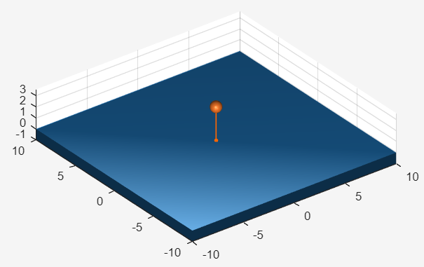

Ray sensor probing the scene for bodies
Class phx.Raycast | Superclass: phx.base.Object
phx.Raycast casts a set of rays into the scene and reports what each
of them hits: the hit point, the surface normal, the distance travelled and the
phx.Body that was hit. It is the building block for range finders, lidar
sweeps, ground probes, line-of-sight tests and picking.
The rays are anchored to a parent body and defined in its local frame, so a sensor mounted on a
moving body sweeps along with it. A ray runs from a column of Origins
to the matching column of Ends; give
Origins a single column to share one origin between every ray, which
is the usual shape of a fan or a sweep.
All results are matrices aligned column by column with the rays.
Points, Normals and
Distances hold NaN in the columns of
rays that hit nothing, so a plot of the hit points breaks over the misses instead of collapsing to
the origin. The Hits mask says which columns are valid, and
Bodies lists the bodies of those columns, so
numel(Bodies) equals nnz(Hits). Each
ray reports the nearest body along it. A ray that starts inside a body does not hit that
body.
The sensor runs in one of two modes. An active sensor casts its rays every substep and its result
properties are always current. A sensor created with
SimulationOrder = "none" is never evaluated while stepping,
costs nothing per step, and is refreshed on demand with
update — the right choice for a sensor
sampled far more slowly than the simulation runs.
r = phx.Raycast(body) creates a single ray of unit length pointing
along the -Z axis of the anchor body. Use
Origins and Ends to lay out the rays
in the local frame of the anchor.
| Argument | Type | Description |
|---|---|---|
| body | phx.Body (scalar) | Anchor body defining the ray frame. The rays move and rotate with it. |
| Property | Type / Default | Description |
|---|---|---|
| Origins | [0;0;0] | Ray origins in the local frame of the anchor, m. Either 3-by-N, one origin per ray, or 3-by-1 shared by every ray. |
| Ends | [0;0;-1] | Ray end points in the local frame of the anchor, m. The number of columns defines the number of rays. |
| Overlay | false | Draw the rays as an overlay (always on top). |
| Points | 3-by-N double (read-only) | Hit points in the global frame, m. NaN where nothing was hit. |
| Normals | 3-by-N double (read-only) | Unit surface normals at the hit points in the global frame, facing the incoming ray. NaN where nothing was hit. |
| Distances | 1-by-N double (read-only) | Distance from the ray origin to the hit point, m. NaN where nothing was hit. |
| Hits | 1-by-N logical (read-only) | Mask of the rays that hit something. |
| Bodies | phx.Body array (read-only) | Bodies that were hit, in ray order. Only the rays in Hits are represented. |
| Count | double (read-only) | Number of rays. |
The inherited SimulationOrder property (from
phx.base.Object) selects when the rays are cast:
"after" (the default) casts them every substep after the solve;
"none" makes the sensor manual, cast only on demand via
update. The mode is read when the simulation builds its pipelines, so
set it when you create the sensor.
Assigning Ends a different number of columns discards the stored
results: the previous columns no longer correspond to the new rays, so
Points, Normals and
Distances report NaN until the next
cast.
| Method | Description |
|---|---|
| update(r) | Cast the rays now and refresh the result properties. Use it to read Points / Distances / Bodies from a manual sensor, which is not cast during stepping. Accepts an array of sensors. |
clf; view(3); axis equal; grid on; camlight headlight; phx.Body("Type", "static", "Position", [0 0 -0.5], ... "Shape", {"Box", "Size", [20 20 1]}); ball = phx.Body("Position", [0 0 8], "Shape", {"Sphere", "Diameter", 1}); % one ray straight down from the body, 20 m long probe = phx.Raycast(ball, "Ends", [0; 0; -20]); sim = phx.Simulation; for k = 1:200 sim.step(0.005, 1, 1); if probe.Hits && probe.Distances < 2 disp("altitude " + probe.Distances); end end delete(sim);

Points and the drawn segment is Distances long. A ray that hits nothing is drawn out to its end point instead.% 64 rays in a fan, all sharing the sensor origin n = 64; th = linspace(-pi/4, pi/4, n); lidar = phx.Raycast(scanner, "Origins", [0; 0; 0], ... "Ends", 30*[sin(th); zeros(1, n); -cos(th)]); sim = phx.Simulation; sim.step(1, 200, 1); % NaN in the misses, so the plot breaks instead of returning to the origin P = lidar.Points; plot3(P(1, :), P(2, :), P(3, :), "o"); disp(nnz(lidar.Hits) + " of " + lidar.Count + " rays returned"); delete(sim);
% a manual sensor costs nothing per step; cast it when you need a reading r = phx.Raycast(rover, "Ends", [0; 0; -5], ... "SimulationOrder", "none"); sim = phx.Simulation; for k = 1:20 sim.step(0.05, 10, -1); update(r); % one reading per 10 substeps if r.Hits disp(r.Bodies(1).Name + " at " + r.Distances); end end delete(sim);